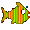

jackmead515@gmail.com
jackmead515@gmail.com
About
I am a data scientist and engineer with a passion for my work. Growing up in Iowa,
surrounded by corn fields and gardening with my family, I developed a love for
agriculture and the environment. My entire career, I've been focusing on applying
my skills to wrangle data together for agronomists, environmentalists, research
scientists, and farmers whether on the land or in the sea. In my career, it's estimated
that I've helped to automated the collection of nearly ~1,000,000,000 images
for computer vision tasks and many terabytes of telemetry from sensors
all over the world (but who's counting). 
For agronomists, I automated timelapse imagery
for research scientists to phenotype different species of corn. The biggest
challenges were dealing with the extreme temperatures, humidity, lack of
stable electricity, mischievous research scientists, and the limited
resources of a Raspberry Pi. 
For fish farmers, I've automated the collection of video footage to monitor the growth and behavior of fish. In the open ocean, there is so much variability in the environment that it's difficult to even keep the cameras online. One of the biggest challenges was collaboration with a global team to ensure data collection. 
For coffee farmers, I'm collecting images to monitor the growth of their crops to predict yield, disease, and pests. The most fun part of this project is the volunteering aspect. I get to be in charge of the project and take ownership of the data collection and analysis. But the most challenging part is domain knowledge and rigor required to run a project independently.
Over time, I hope to continue to learn and grow as a data scientist
applying my skills to industries and communities in need. The environment
will always remain a passion of mine and whether or not I'm working in
the field, I will always be working to protect it. If your organization
is in need of a data scientist or engineer looking to make a difference,
please reach out to me at my email. 
Projects
I work on many different projects in my free time. Applying computer vision and AI to coffee plants, scuba diving footage, custom game engines, and other querkier projects. Feel free to check out any of my projects you find interesting.
For Continued Learning
IBM Deep Learning Course - Kona Coffee Yield
 2023-11-19
2023-11-19